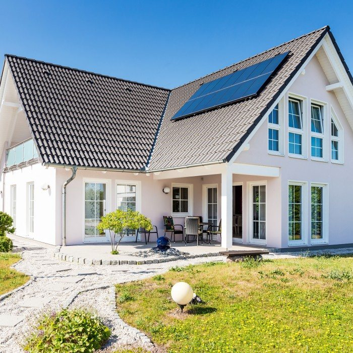
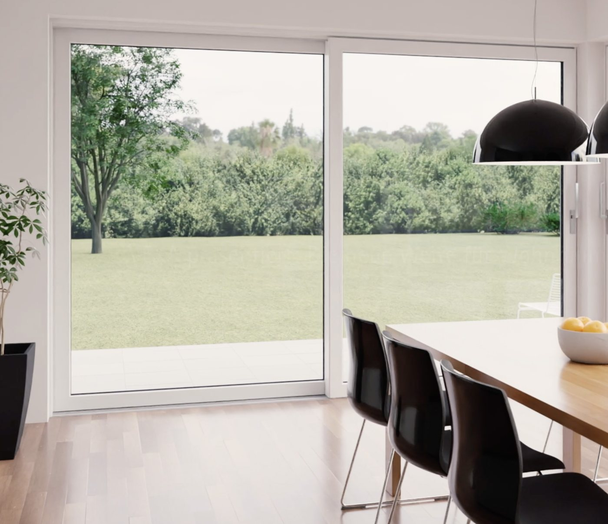
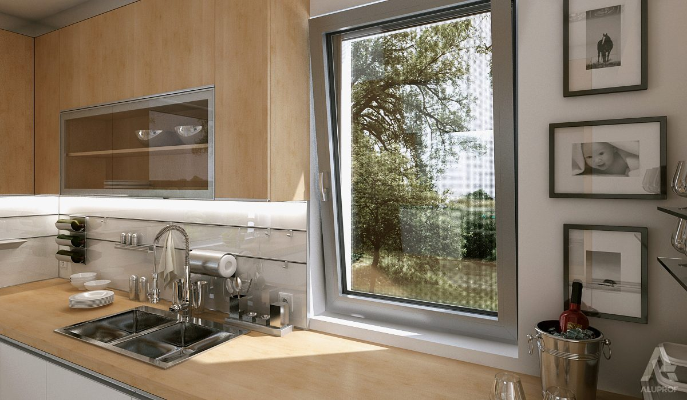
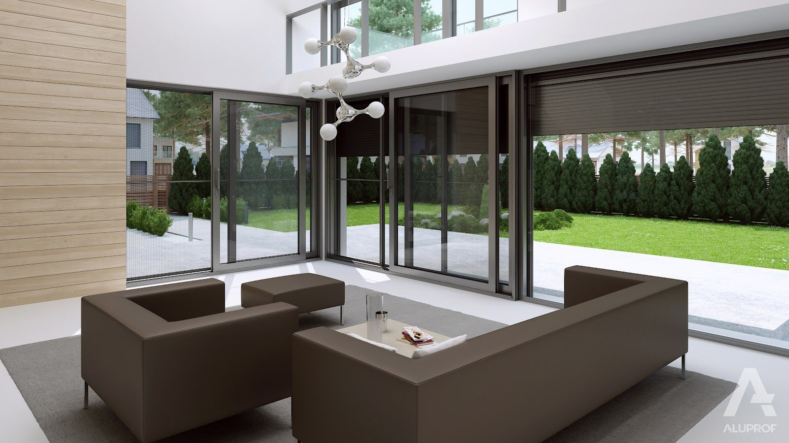

Wysoka jakość, doskonałe parametry i design dopasowany do Twoich potrzeb.

Odpowiednio dobrane okna mają istotny wpływ na efektywność energetyczną budynku i komfort jego użytkowania. Systemy okienne VEKA z wysokiej jakości profili PVC łączą dobre parametry techniczne z estetyką i trwałością. Wybierając okna VEKA, stawiasz na sprawdzone rozwiązania, jakość i niezawodność na lata.



Uw od 0,74 W/m²K przy pakiecie 3-szybowym
Ścianki zewnętrzne min. 2,8 mm wg PN-EN 12608
Ponad 50 oklein: dekory drewnopodobne, RAL, VEKA Spectral

Aluprof to ceniony polski producent systemów aluminiowych, który łączy nowoczesne technologie z funkcjonalnością i estetyką. Okna Aluprof to doskonały wybór dla osób ceniących trwałość, energooszczędność i nowoczesny design. Sprawdzają się zarówno w nowoczesnych domach, jak i budynkach komercyjnych.


Uw od 0,75 W/m²K — ciepłe profile z przekładką termiczną
Aluminium odporne na warunki atmosferyczne i promieniowanie słoneczne
Smukłe profile i duże przeszklenia w pełnej palecie kolorów RAL
| System | Materiał | Głębokość zabudowy | Uw od | Zastosowanie |
|---|---|---|---|---|
| VEKA SOFTLINE 82 MD | PVC kl. A | 82 mm | 0,74 W/m²K | domy energooszczędne, nowe budownictwo i modernizacje |
| VEKA PERFECTLINE | PVC kl. A | 70 mm | 0,83 W/m²K | wymiana stolarki w budynkach istniejących |
| VEKAMOTION 82 (HST) | PVC kl. A | 194 mm (rama) | 0,78 W/m²K | przeszklenia tarasowe do 6,5 m |
| Aluprof MB-79N | aluminium | 70 mm (rama) | 0,75 W/m²K | nowoczesne domy i budynki komercyjne |
| Aluprof MB-77HS | aluminium | 174 mm (rama) | 0,84 W/m²K | duże przeszklenia przesuwne, skrzydła do 600 kg |
Domy tradycyjne i dworkowe – klasyczne proporcje, białe profile, okleiny drewnopodobne i szprosy podkreślają ponadczasowy wygląd elewacji.
Domy rustykalne – okna w kolorach naturalnego drewna doskonale komponują się z kamieniem i drewnianymi elementami.
Nowoczesna architektura – duże przeszklenia, profile w kolorze antracytu lub czerni oraz systemy przesuwne podkreślają minimalistyczny charakter budynku.
Program „Czyste Powietrze” daje możliwość uzyskania dofinansowania na wymianę okien w ramach termomodernizacji budynku. Planując wymianę okien z dofinansowaniem, warto zwrócić uwagę przede wszystkim na:
Tak! Okna są produkowane na indywidualny wymiar, dzięki czemu można idealnie dopasować je do otworów okiennych oraz projektu budynku. Oferujemy rozwiązania dostosowane do różnych potrzeb – od standardowych okien po nietypowe kształty, wymiary i przeszklenia.
Tak! Przygotowujemy bezpłatną wycenę okien na podstawie projektu lub zapytania przesłanego mailowo. Możesz również odwiedzić naszą firmę i na miejscu omówić szczegóły inwestycji oraz dobrać odpowiednie rozwiązania. Pomożemy Ci wybrać okna dopasowane do Twoich potrzeb i budżetu.
Tak, wykonujemy pomiary okien bezpośrednio u klienta, aby jak najlepiej dopasować stolarkę do budynku. Pomiar ma charakter wiążący i wiąże się z pobraniem zaliczki na poczet zamówienia. Dzięki temu możemy precyzyjnie przygotować ofertę i przejść do realizacji zamówienia.
Tak, oferujemy demontaż starych okien w ramach wymiany stolarki okiennej. Zakres prac ustalamy indywidualnie, aby dopasować usługę do potrzeb klienta i specyfiki budynku. Szczegóły demontażu warto omówić już na etapie przygotowywania wyceny.
Tak! Zapewniamy serwis zamontowanych okien, ponieważ zależy nam na długotrwałej współpracy i zadowoleniu naszych klientów. Pomagamy również w przypadku problemów z funkcjonowaniem okien i w razie potrzeby wykonujemy regulację.
Uw opisuje izolacyjność całego okna. Im niższa wartość, tym cieplejsze okno.
Norma PN-EN 12608 dzieli profile PVC według grubości ścianek: klasa A to ścianki zewnętrzne ≥ 2,8 mm, klasa B — ≥ 2,5 mm. Grubsze ścianki oznaczają sztywniejsze konstrukcje, mocniejsze zgrzewy naroży i lepsze osadzenie okuć — dlatego montujemy wyłącznie profile klasy A.
Pakiet 3-szybowy (Ug 0,5–0,7) ogranicza straty ciepła o ok. 30–40% względem 2-szybowego (Ug 1,0) i poprawia komfort zimą przy dużych przeszkleniach. Do tego ciepła ramka dystansowa obniża współczynnik psi na krawędzi szyby i ryzyko wykraplania pary.
Skontaktuj się z nami — doradzimy technicznie, precyzyjnie zmierzymy otwory i przygotujemy kalkulację cenową.